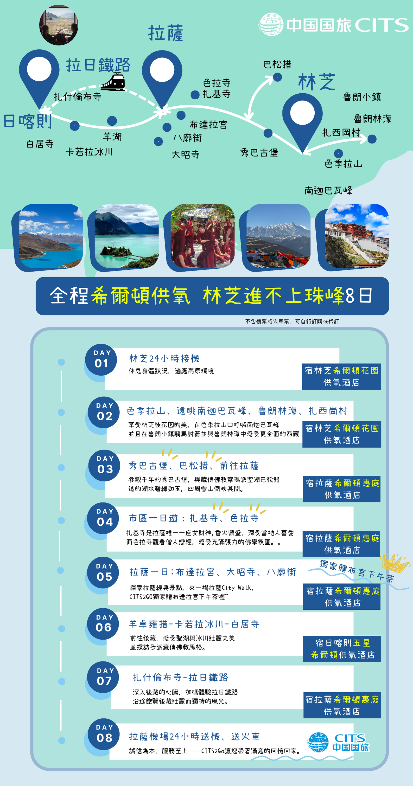
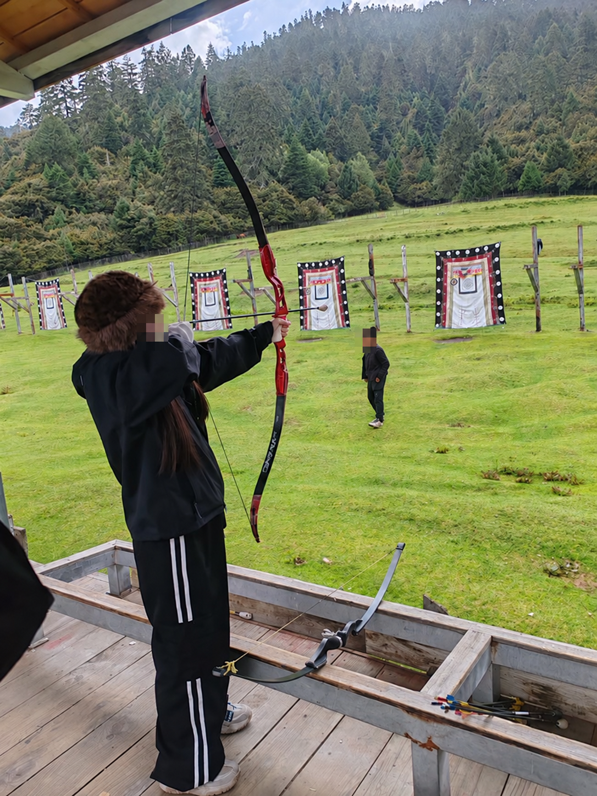
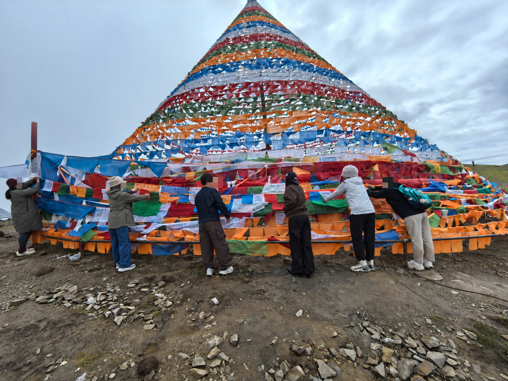
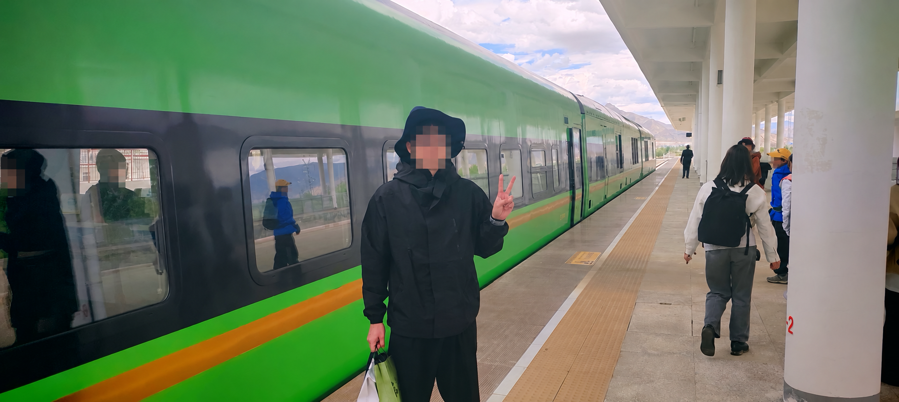
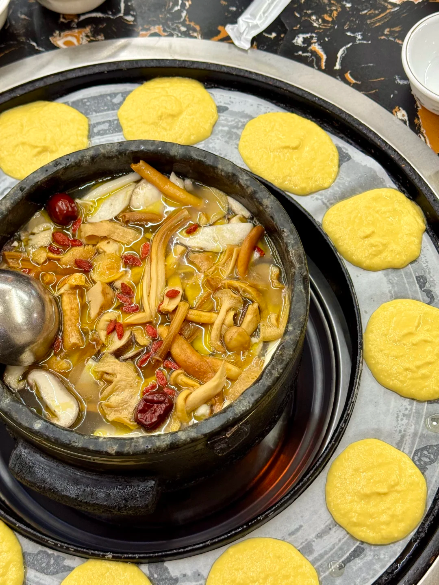
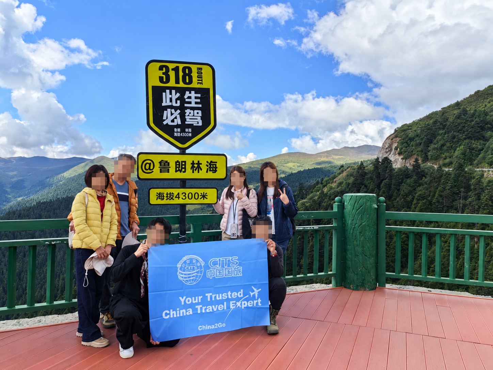

林芝入藏、不上珠峰8日：开发与测试验收
未上线，等待审批。开发和离线执行测试已完成。真实模型语义效果尚未验收，不能将下方固定话术预览当作模型实测。
离线测试：861 通过
新产品测试：43项
素材：18张
生产变更：0
测试阻断外网连接，未发送客户消息，未修改生产数据库或服务。新线路只在本地隔离数据库中启用，所有新素材的生产发送审批标记为未批准。
| 场景 | 当前行为 | 验证结果 |
|---|
| 广告直接进入 | 8个标题/别名进入独立林芝8日，不误认精华8天 | 自动化通过 |
| 高反疑虑与选线分开 | 程序区分推荐/选择；语义分类仍需真实模型验收 | 执行验证通过；模型待测 |
| 拒绝珠峰后停旧图文 | 模型等待期间暂停；决定转荐后取消未发内容 | 自动化通过 |
| 确认换线 | 保留月份、人数、联系方式及AI/人工控制，差异介绍不重发地图 | 自动化通过 |
| 重新想去珠峰 | 允许客户主动改回；沉默事件不能替客户选择 | 自动化通过 |
| 日期与价格 | 逐日核对2027年365天；8280/9580/9980独立核价，不主动列房差 | 自动化通过 |
| 不匹配日期 | 4月20日不推荐已过期桃花；换线重新核对日期 | 自动化通过 |
| 冬季口径冲突 | 保留待核对状态，不声称停卖、不自动套冬游价 | 自动化通过；业务口径待确认 |
| 沉默跟随 | 沿用每天一轮、最后回复起七天；拒绝原线后不再推旧线 | 相关回归通过 |
| 素材与发布隔离 | 18张原图哈希验证并解析；六线路仅载入本地隔离库 | 通过；未上线 |
对客内容预览
以下来自候选配置，为固定素材和排版预览，未调用真实模型。
中途确认换线后的简短介绍
先給您看「林芝入藏、不上珠峰8日」的行程圖～從林芝到拉薩、日喀則，最後搭拉日鐵路回拉薩。

這條保留林芝、拉薩與日喀則，不安排珠峰和絨布住宿；前兩晚住林芝，最後搭拉日鐵路回拉薩。
若地图在推荐阶段已经发过，正式换线时只补文字。日期、人数、同行情况及联系方式保留，不重复开场问候。
首次完整介绍配置（11组文字）
先給您看「林芝入藏、不上珠峰8日」的行程圖～從林芝到拉薩、日喀則，最後搭拉日鐵路回拉薩。
前兩晚先住林芝，這條不去珠峰；但仍有高海拔景點，不能保證不會高反喔。
會在色季拉山遠眺南迦巴瓦峰，再到魯朗林海，也安排騎馬、射響箭體驗～能否看到山峰要配合當天天氣。
也會參觀千年歷史的秀巴古堡，看看林芝的人文風景～
巴松措和湖心島也有安排，湖水像綠寶石一樣～
拉薩安排布達拉宮、大昭寺、八廓街、扎基寺和色拉寺，還有布宮景觀下午茶。
接著看羊卓雍措、卡若拉冰川與白居寺，再到日喀則參觀扎什倫布寺。
最後搭拉日鐵路回拉薩，沿途欣賞河谷與高原風景，也減少一段車程。
所有酒店都有供氧，安排希爾頓系列，日喀則升級一晚五星～這是房內的供氧設備。
拼團最多6人，安排9座VIP車；隨車有醫用氧氣鋼瓶、葡萄糖及便攜氧氣。
我們 China2Go 國旅環球接待港澳台與全球外賓，安排純玩小團，無購物約定也寫進合約。
普通报价预览：2027年6月
【不上珠峰・林芝8天｜林芝＋拉薩＋日喀則】
次次旺季出發：5/6－6/30（每週二出發）
6人精緻小團：¥9,580/人（2人一間）
包含：入藏函、車、司機、導遊、保險、住宿、門票、酒店早餐
不含：機票、午晚餐、小費
現在報名還有優惠喔！
仅客户问价、日期核对通过后使用。单房差保留在内部报价数据，客户主动询问时再回答。
跟随素材

跟您分享團友在魯朗騎馬、射響箭的體驗照～這項體驗有包含在行程裡。

跟您分享團友一起掛經幡的照片～這也是行程安排的在地體驗。
跟您分享日喀則扎什倫布寺的風景，這條行程也會到訪～

回程的拉日鐵路也是行程的一部分，可以從車窗欣賞沿途風景～

這是林芝的墨脫石鍋雞～午晚餐自理，有興趣可以請導遊協助安排。

這是魯朗林海的風景，山谷裡有大片森林，給您看看～
待完成的真实模型验收
已准备13个真实模型场景，目前执行0个。本轮模型费用为0元。此前20元额度累计计费或预留19.9694元，剩余约0.0306元；追加最多5元的测试预算尚未批准，原账本未清零。
- 广告直接进入并回答月份人数
- 只问高反
- 想看珠峰但担心
- 带长辈不等于改线
- 拒绝珠峰先推荐
- 接受替代线
- 新日期不可售
- 只有八天不能硬转九日
- 冬季推荐不等于选冰川
- 新线路六月报价
- 可以改回珠峰
- 医生劝阻不判断可参加
- 未接受替代线时不发旧线
语义验收通过后仍需用户单独审批上线。冬季林芝8日的销售口径未统一时，保持“顾问核对”的处理，不自动报价。
证据